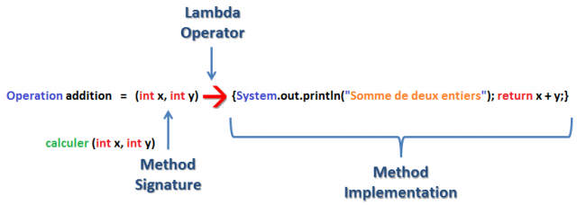

Whatever luck I had, I made. I was never a natural athlete, but I paid my dues in sweat and concentration and took the time necessary to learn Karate and become World Champion.
Optional<Integer>
personRepository.getWinnerByName2(name)
.ifPresent(p -> sendMail(p.getMail(), "You win..."));
personRepository.getWinnerByName3("Wendy")
.orElse(new Person().setName("anonymous"))
.getName());
personRepository.getWinnerByName3("Wendy")
.orElseGet(() -> personRepository.getWinnerByName3("Mathilde").get())
.getName());
personRepository.getWinnerByName3("Wendy")
.orElseThrow(IllegalArgumentException::new);
@FunctionalInterface(pas obligatoire)
Name res = parser.parse("Eric Clapton", new Creator<Name>() {
@Override
public Name create(String firstName, String lastName) {
return new Name(firstName, lastName);
}
});
Remplacé par :
Name res = parser.parse("Eric Clapton", (firstName, lastName) -> new Name(firstName, lastName));
ou :
Name res = parser.parse("Eric Clapton", Name::new);
@FunctionalInterface
public interface Operation{
int calculer(int x, int y);
}

Operation addition = (x,y) -> x + y;
TODO livre Java 8